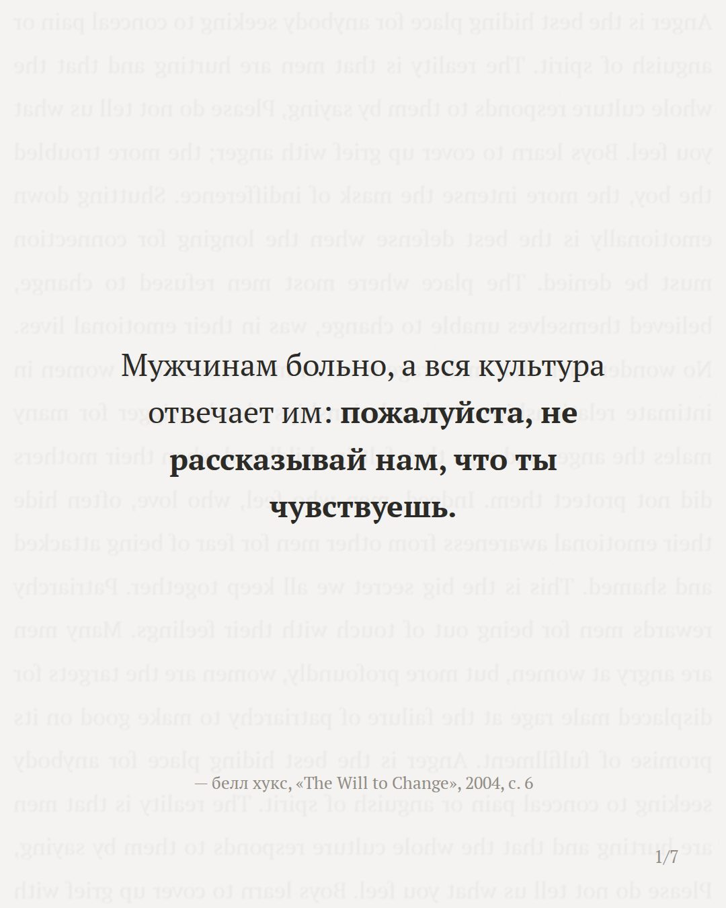
Акт 02 · контент · сегодня утром
Карусель по одному сообщению
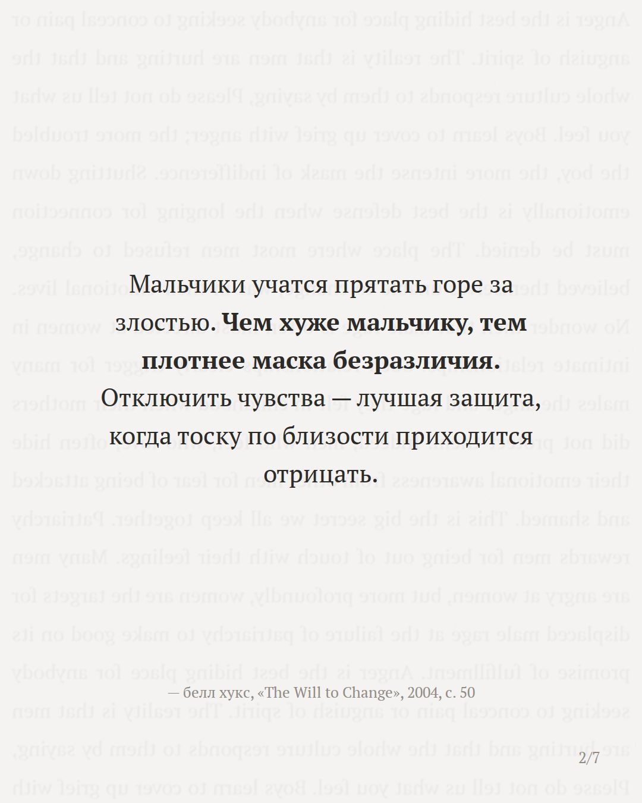
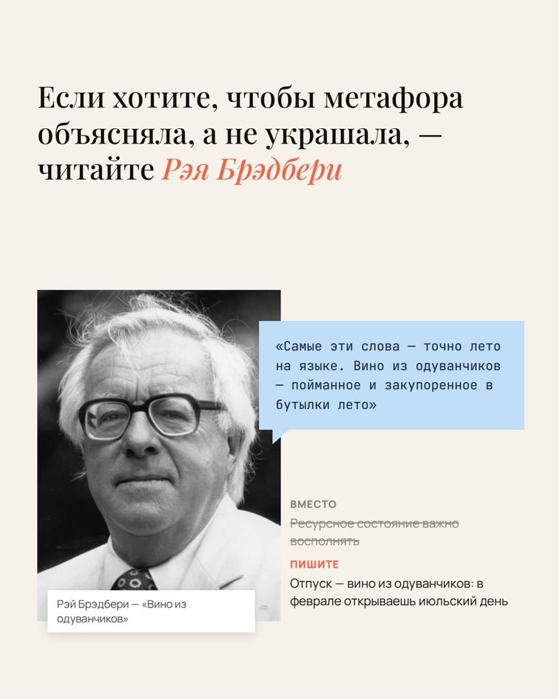
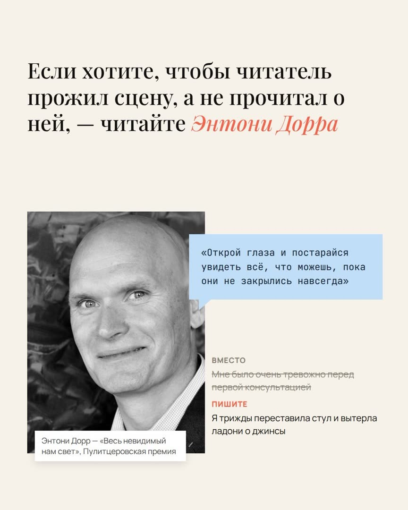
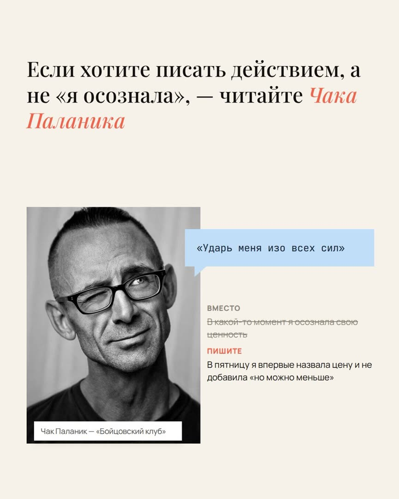
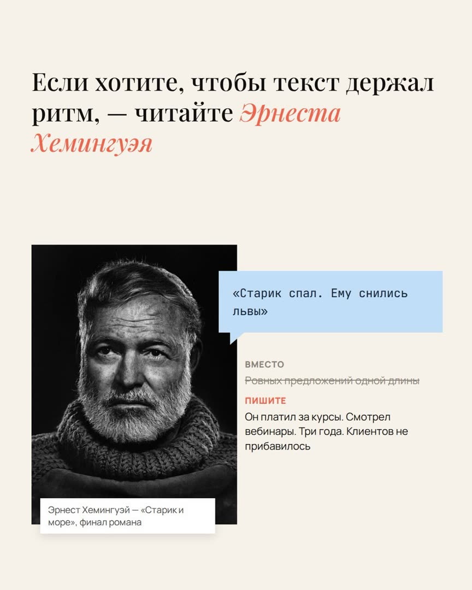
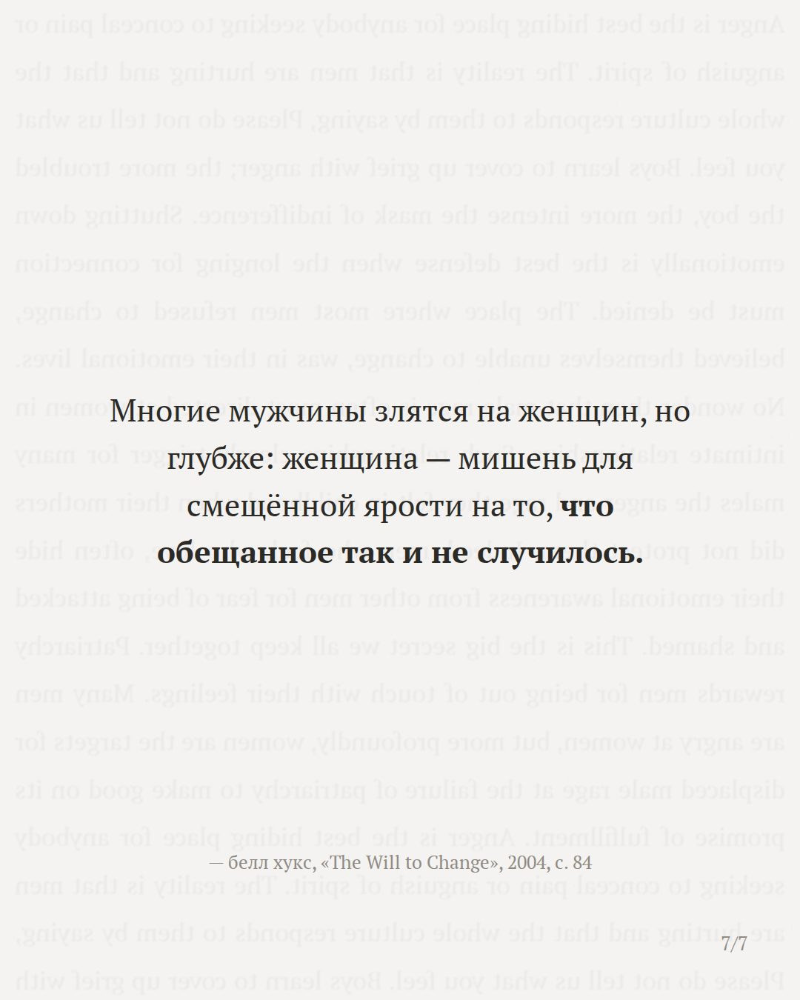
1 / 8белл хукс · обложка + 7 цитат
«Берём 2, 3, 6, 7, 8, 9, 15. На обложку 5. Верстай»
9:34«Хукс, цитаты» — 17 цитат со страницами книги
9:41выбрал номера
9:438 слайдов готовы
9:59текст поста, факты сверены по источникам
Одну цитату агент снял сам: на 60-й странице это оказались слова Терренса Рила, а не автора. Скорость без проверки фактов не нужна.
Текст поста целиком ➤
Ей четыре или пять лет. Отец разрешил брату достать жестянку с шариками, она захотела играть, брат сказал — девочки в шарики не играют. Она настояла. Отец отломал доску от сетчатой двери и бил её, приговаривая: «Ты всего лишь маленькая девочка. Когда я говорю тебе что-то сделать — делай».
Девочку звали Глория Джин Уоткинс. Родилась в 1952 году в Хопкинсвилле, Кентукки, четвёртая из семи детей, ходила в сегрегированные школы округа Кристиан.
Псевдоним белл хукс — имя её прабабки по матери, Белл Блэр Хукс. Она писала его строчными буквами, чтобы внимание шло на написанное, а не на автора. В девятнадцать, студенткой Стэнфорда, начала «Ain't I a Woman»; книга вышла в 1981-м. Всего книг у неё больше тридцати.
В 2004-м вышла «The Will to Change» — книга о мужчинах. В предисловии она вспоминает: ребёнком лежала в детской кровати, ждала, когда в голосе отца появится злость, и думала: «Если бы он умер, мы могли бы жить».
В книге есть сцена парной терапии. Ей двадцать с чем-то, они ходят вдвоём с мужчиной, с которым она прожила больше десяти лет. Он объясняет: она просит его говорить о чувствах, а когда он говорит — она срывается. «Он был прав», — пишет она.
Незадолго до книги она позвонила домой. Отцу за восемьдесят, он сказал про неё и сестру: «Я вас обеих очень люблю». Она была поражена, хотела поговорить и не нашла слов: «Страх заставил меня замолчать». Взрослыми и она, и её братья с сёстрами всё ещё боялись спросить отца: «Почему, папа? Почему ты всегда был таким злым?»
В том же 2004-м она вернулась в Кентукки — профессором в Berea College. «Я хотела вернуть что-то миру, из которого вышла». Там, в Берии, она умерла 15 декабря 2021 года, в шестьдесят девять — почечная недостаточность, со слов сестры.
Семь цитат — в карусели.
От голосового до анимированной карусели
1 / 11Смешарики · 11 анимированных слайдов
10:10голосом: «взрослые цитаты из Смешариков, 20 штук»
10:13двадцать цитат с героями и сериями
10:20«давай анимировано», выбрал девять
10:3510 видео-слайдов с героями
10:37текст поста
10:50финальный слайд с кадрами из серии
Герои — официальные, с сайта сериала. Сгенерированных картинок в постах нет: запрет с 21 августа.
Текст поста целиком ➤
В феврале 2011 года «Афиша» публикует разговор Юрия Сапрыкина с Анатолием Прохоровым, художественным руководителем «Смешариков». Сапрыкин говорит: «Есть еще потрясающая серия „Смысл жизни“ — ремейк „Мертвеца“ Джармуша и одновременно „Легенды о Нараяме“. Я чуть со стула не упал, когда увидел». Серия идёт шесть с половиной минут. Основная аудитория сериала — дети пяти-семи лет.
Прохоров отвечает: «Мы долго думали, имеют ли право на существование такие серии, мы же понимаем, что это не для пятилетнего». У «Смешариков» есть документ из шести-семи пунктов, «сценарное евангелие». Первое правило в нём: «Истории должны быть интересны взрослому и понятны ребенку». Сценаристов пробовалось около восьмидесяти, реально работали «три с половиной человека».
Ведущий сценарист — Алексей Лебедев, на его счету больше трёхсот серий франшизы. Композитор сериала Сергей Васильев говорит о нём: «Это, по сути, человек, определивший интонацию всего сериала».
В серии «Мисс Вселенная» Нюша получает отказ с конкурса красоты: «Зачем вы меня обманывали? Какая я Мисс Вселенная, я пельмень на ножках». Прохоров: «Это может сказать только тридцатилетняя женщина, которая на что-то надеялась, и вдруг такой облом». Карыч, Совунья и Копатыч в сериале — старики.
«Смысл жизни» написал Лебедев, снял Джангир Сулейманов — стилистически как «Мертвец» Джармуша: изображение сменяется чёрным кадром, остаётся звук растекающейся гитары. У студии было семь сценариев под кодовым названием «Смертные грехи»; Сулейманов сделал серии про уныние и чревоугодие.
В 2023-м Сулейманов скажет: «Ее показывают даже на факультетах психологии и философии!» Некоторые зрители считают, что Бараш в этой серии умер.
Девять цитат — в карусели.
Тот же конвейер, рекорд серии
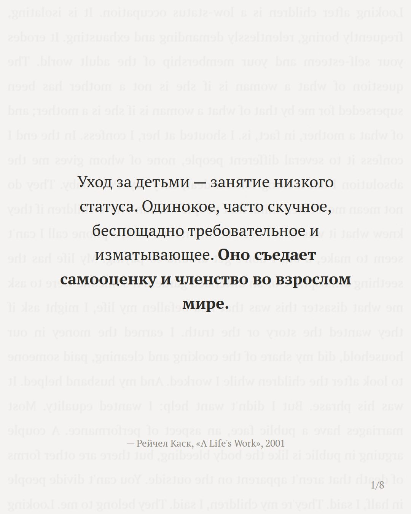
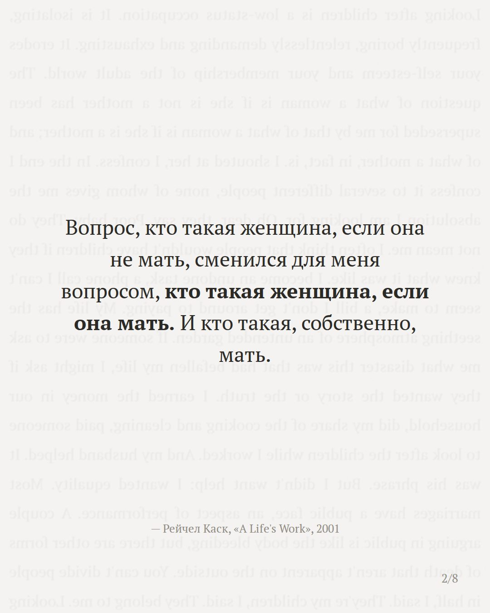
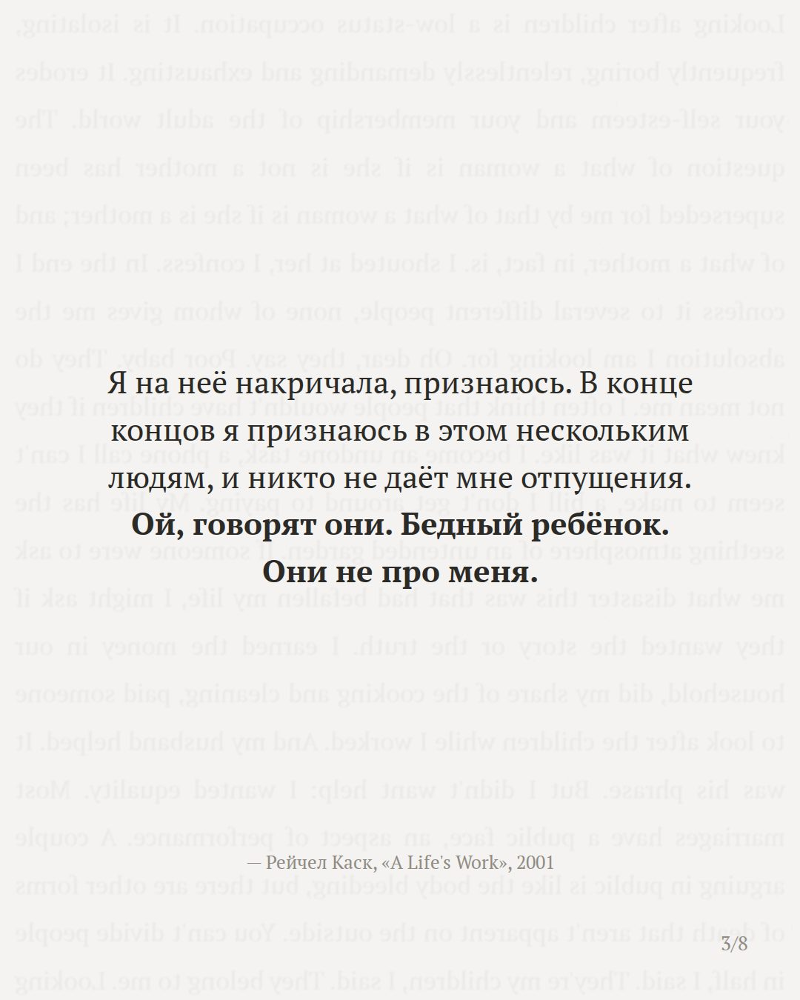
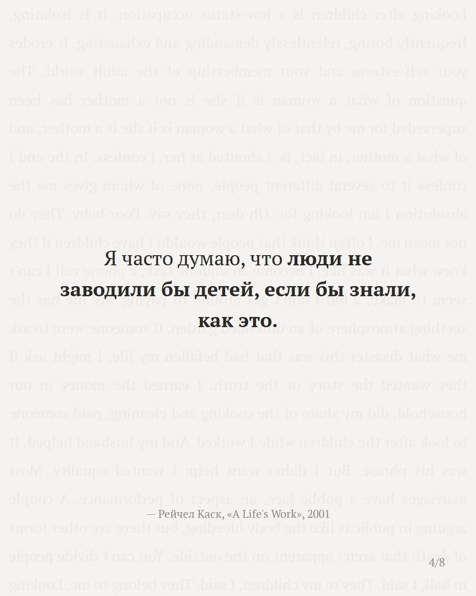
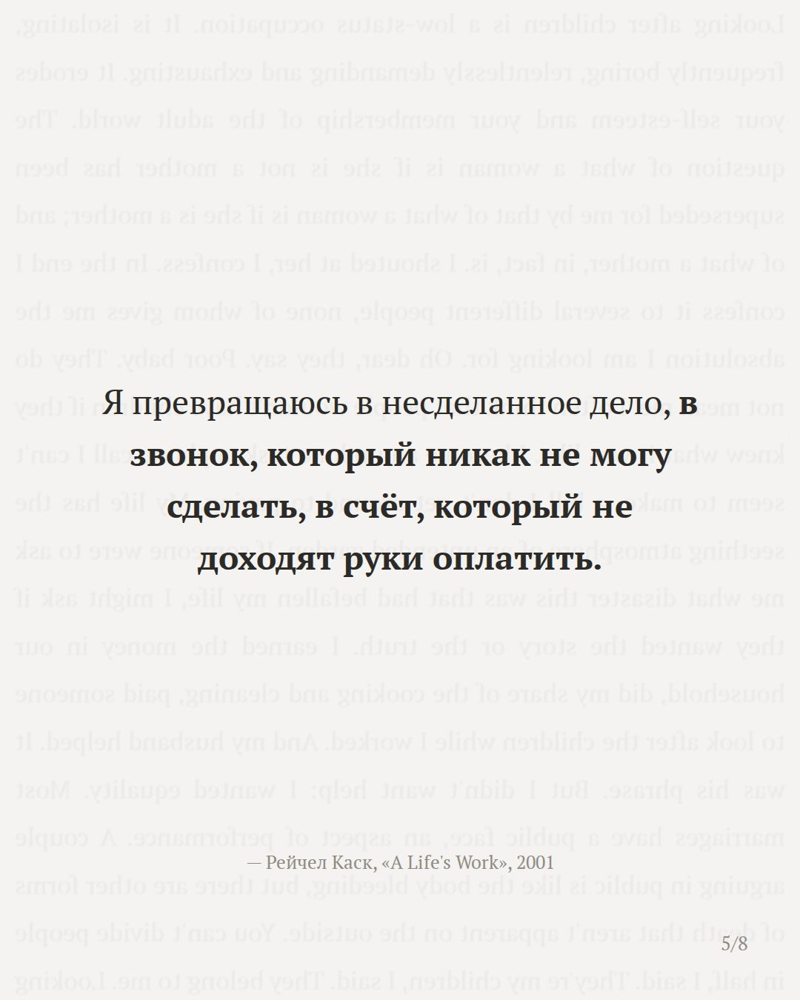
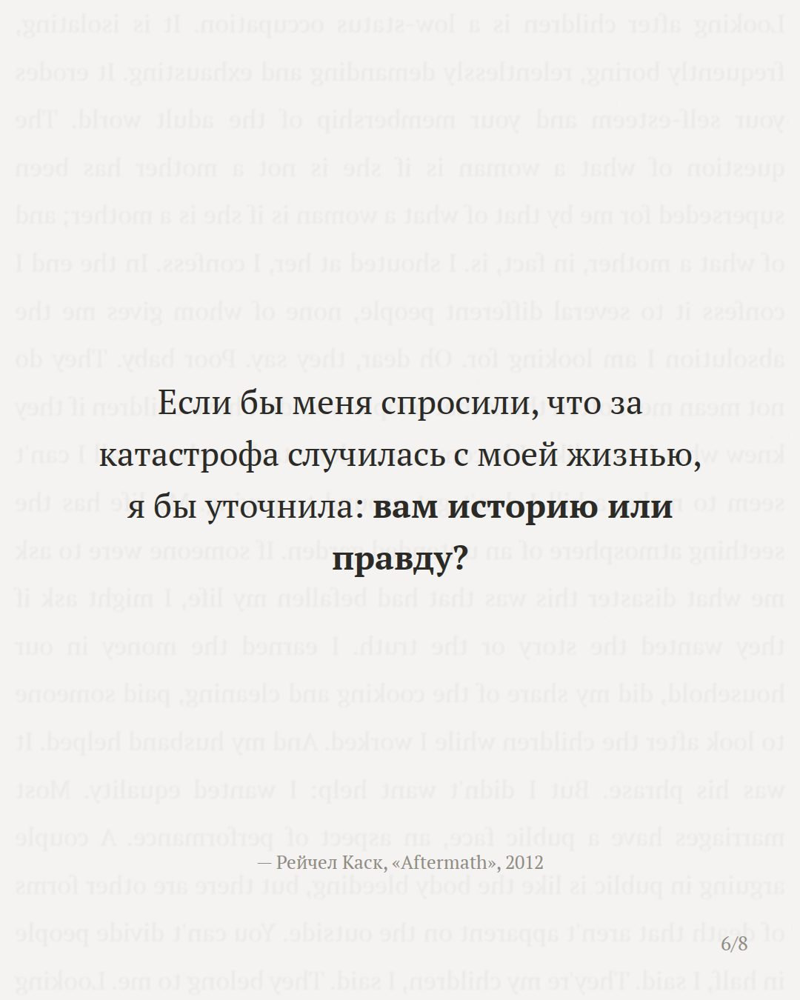
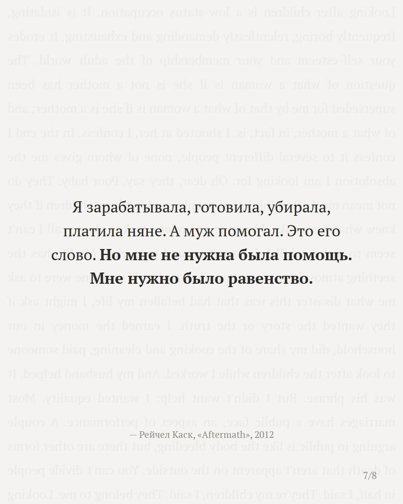
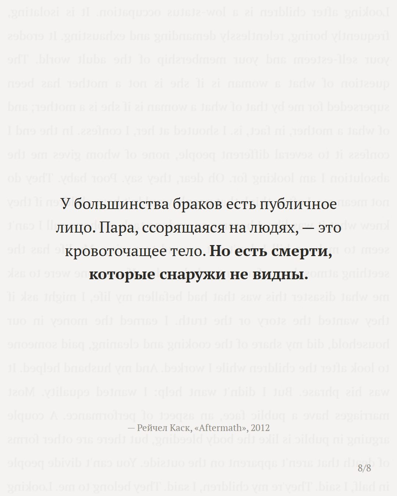
1 / 9Рейчел Каск · обложка + 8 цитат
97 117охват за два дня
5 190лайков
476комментариев
5.09Рейчел Каск — рекорд серии
31.08Резерфорд, та же вёрстка — 7 873 охвата
выводрешает герой, а не дизайн
Агент нужен, чтобы быстро перебрать героев и цитаты из самих книг; выбор остаётся за автором. Сегодня утром я за пять минут отказался от двух героев и взял третьего.
Текст поста целиком ➤
В 2001 году Рейчел Каск, к тому времени автор трёх романов и лауреат премии Whitbread, выпустила книгу о первом годе с ребёнком. Первая же рецензия: «Если бы все прочли эту книгу, человечество перестало бы размножаться». Дальше её обвиняли в ненависти к детям, в послеродовой депрессии, в жадности, в эгоизме и, чаще всего, в том, что она «слишком интеллектуальна». Читатели, как она потом написала, судили книгу не как читатели, а как матери.
Она родилась в 1967-м в Канаде, в семье английских католиков, выросла в Лос-Анджелесе, в одиннадцать её отправили в католический интернат в Кембридже. Оксфорд, первый роман в двадцать шесть. «A Life's Work» она писала во время второй беременности; книга о том, что уход за ребёнком — занятие низкого статуса, а мать по определению не может одновременно быть собой.
Через десять лет она ушла от мужа, юриста, который бросил работу ради детей, и через год выпустила «Aftermath» — о разводе без роли жертвы. Sunday Times назвала её «хрупкой маленькой доминатрикс и непревзойдённой нарциссисткой»; эта рецензия получила британский приз «Худшая рецензия года». С родителями Каск не разговаривает с 2007-го. Потом была трилогия «Outline», два лонг-листа Букера и премия Goldsmiths 2024 года, а сама она стала одним из главных прозаиков английского языка.
Восемь цитат — в карусели, пять из книги о материнстве и три из книги о разводе. Оригинал оставил призрачным текстом на кадрах.